第17讲 · 多元函数积分学的预备知识（仅数学一）
据《张宇考研数学基础30讲·高等数学分册（2026版）》整理 · 覆盖原书 P506–P529
本讲导读
这一讲是第18讲重积分的工具箱：先备齐向量代数、空间平面与直线、空间曲线与曲面，再用多元微分学处理曲线的切线与法平面、曲面的切平面与法线，最后带一点场论初步（方向导数、梯度、散度、旋度）。仅数学一考，数二数三可以整讲跳过。题型基本是选择、填空：曲线曲面方程、切线法平面、切平面法线、方向导数与梯度的计算轮着出，书里点名的重难点是空间曲线与曲面方程的求解（投影、旋转曲面）。公式多而杂，别硬背——主线是向量：平面的法向量、直线的方向向量、曲面的法向量、曲线的切向量，全靠向量搭桥。学的时候多动手画图，投影和旋转曲面光看不练等于没学。
站注·真题大数据（新东方《考研高数历年真题大数据》，近15年逐题统计）：本讲整体属于第三梯队考点（15年出现5–8次，但一考就是大题10分+），性质是"工具性"——平面束、投影、旋转曲面这些操作很少单独命题，主要作为第18讲曲线曲面积分的铺垫出现。拆开看要区别对待：方向导数与梯度单算第二梯队（15年出现10次+，高频非必考，常以小题直接考计算），值得当成独立得分点练熟；向量代数与空间解析几何本体才是第三梯队，按"会操作、不深挖"的性价比策略复习即可。
知识框架
- 向量代数
- 向量及其表达形式（自由向量、坐标表示、模）
- 数量积：夹角公式、垂直条件、投影
- 向量积：行列式算法、平行条件、几何意义是面积
- 混合积：体积、三向量共面的判定
- 方向角与方向余弦（单位向量的方向表示）
- 空间平面与直线
- 平面方程：一般式、点法式、三点式、截距式、平面束（重点：法向量+一点）
- 直线方程：一般式（交面式）、点向式、参数式、两点式（重点：方向向量+一点）
- 位置关系与距离：点线、点面（含二维特例）、线线、面面、线面
- 空间曲线与曲面
- 空间曲线：一般式、参数方程、在坐标面上的投影（消元法）
- 空间曲面：曲面方程、二次曲面（截痕识图）、柱面（缺字判母线）、旋转曲面
- 多元函数微分学的几何应用
- 空间曲线的切线与法平面（参数式给出 / 方程组给出）
- 空间曲面的切平面与法线（隐式给出 / 显式给出，注意法向量朝向）
- 场论初步
- 场的概念（数量场、向量场）
- 方向导数、梯度及其关系（最大方向导数）
- 散度、旋度
核心概念与定理
一、向量及其表达形式
既有大小又有方向的量叫向量；两个向量只要大小相等、方向相同就是相等的向量，与它们在空间中的位置无关（向量的自由性，印P508）。坐标表示 \( \boldsymbol{a}=(a_x,a_y,a_z)=a_x\boldsymbol{i}+a_y\boldsymbol{j}+a_z\boldsymbol{k} \)，模 \( |\boldsymbol{a}|=\sqrt{a_x^2+a_y^2+a_z^2} \)。书上有个小注：高等数学中手写向量要打箭头，线性代数里不打——两门课约定不同，别在卷面上纠结这个。
二、两向量的数量积
数量积（内积、点积）算出来是数：\( \boldsymbol{a}\cdot\boldsymbol{b}=a_xb_x+a_yb_y+a_zb_z=|\boldsymbol{a}||\boldsymbol{b}|\cos\theta \)。三大用途：反求夹角 \( \cos\theta=\dfrac{\boldsymbol{a}\cdot\boldsymbol{b}}{|\boldsymbol{a}||\boldsymbol{b}|}=\dfrac{a_xb_x+a_yb_y+a_zb_z}{\sqrt{a_x^2+a_y^2+a_z^2}\sqrt{b_x^2+b_y^2+b_z^2}} \)；判垂直 \( \boldsymbol{a}\perp\boldsymbol{b}\Leftrightarrow\theta=\dfrac{\pi}{2}\Leftrightarrow\boldsymbol{a}\cdot\boldsymbol{b}=0 \)（垂直方程最常用）；算投影 \( \operatorname{Prj}_{\boldsymbol{b}}\boldsymbol{a}=|\boldsymbol{a}|\cos\theta=\dfrac{\boldsymbol{a}\cdot\boldsymbol{b}}{|\boldsymbol{b}|} \)。
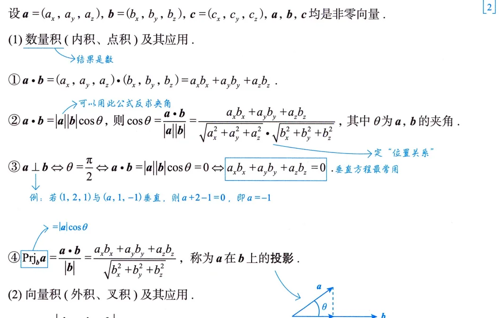
书里给的小例：若 \( (1,2,1) \) 与 \( (a,1,-1) \) 垂直，则 \( a+2-1=0 \)，即 \( a=-1 \)——设未知数写垂直方程，就是这章反复出现的动作（印P508）。
三、两向量的向量积
向量积（外积、叉积）算出来是向量：按三阶行列式展开
\[ \boldsymbol{a}\times\boldsymbol{b}=\begin{vmatrix}\boldsymbol{i}&\boldsymbol{j}&\boldsymbol{k}\\a_x&a_y&a_z\\b_x&b_y&b_z\end{vmatrix}, \]
模 \( |\boldsymbol{a}\times\boldsymbol{b}|=|\boldsymbol{a}||\boldsymbol{b}|\sin\theta \) 等于以 \( \boldsymbol{a},\boldsymbol{b} \) 为邻边的平行四边形面积（三角形面积取它的一半），方向由右手规则确定（转向角不超过 \( \pi \)）。平行条件：\( \boldsymbol{a}\,//\,\boldsymbol{b}\Leftrightarrow\theta=0 \) 或 \( \pi\Leftrightarrow\boldsymbol{a}\times\boldsymbol{b}=\boldsymbol{0}\Leftrightarrow\dfrac{a_x}{b_x}=\dfrac{a_y}{b_y}=\dfrac{a_z}{b_z} \)（分母为零时理解为分子为零）。这一讲里"叉积"出场率极高：交面式直线的方向向量、平面束里两法向量搭桥、点到直线距离，全靠它。
四、混合积
\( [\boldsymbol{abc}]=(\boldsymbol{a}\times\boldsymbol{b})\cdot\boldsymbol{c} \) 写成三阶行列式，其绝对值等于以三向量为棱的平行六面体体积；行列式为零 \( \Leftrightarrow \) 三向量共面——判点共面、线共面就靠它（印P509）。轮换三个向量的顺序值不变，交换两个则变号，做题时可以借此简化行列式。
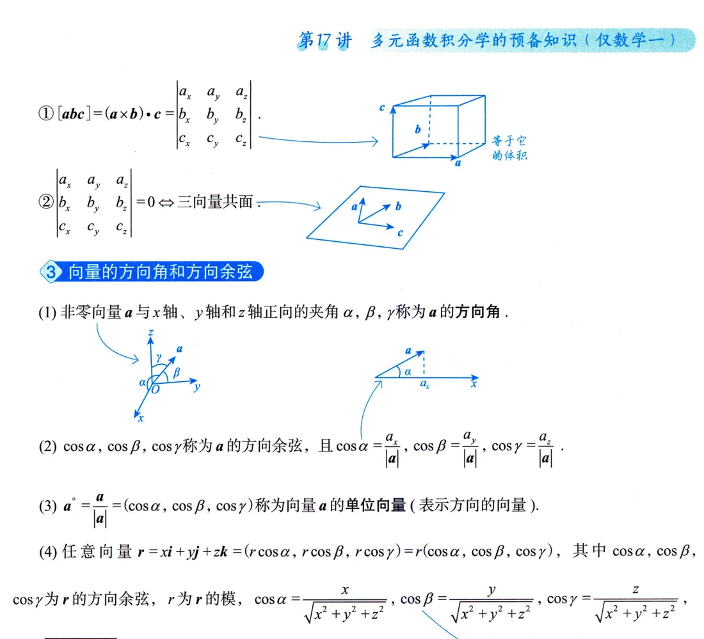
五、方向角与方向余弦
非零向量 \( \boldsymbol{a} \) 与 \( x \) 轴、\( y \) 轴、\( z \) 轴正向的夹角 \( \alpha,\beta,\gamma \) 称为 \( \boldsymbol{a} \) 的方向角；\( \cos\alpha=\dfrac{a_x}{|\boldsymbol{a}|},\ \cos\beta=\dfrac{a_y}{|\boldsymbol{a}|},\ \cos\gamma=\dfrac{a_z}{|\boldsymbol{a}|} \) 称为方向余弦，恒有 \( \cos^2\alpha+\cos^2\beta+\cos^2\gamma=1 \)。单位向量 \( \boldsymbol{a}^{\circ}=\dfrac{\boldsymbol{a}}{|\boldsymbol{a}|}=(\cos\alpha,\cos\beta,\cos\gamma) \)——后面方向导数里"先把方向单位化"用的就是它。任意向量 \( \boldsymbol{r}=x\boldsymbol{i}+y\boldsymbol{j}+z\boldsymbol{k}=r(\cos\alpha,\cos\beta,\cos\gamma) \)，\( r=|\boldsymbol{r}| \)（印P509）。小例：\( \boldsymbol{a}=(1,1,2) \)，\( |\boldsymbol{a}|=\sqrt{1+1+4}=\sqrt6 \)。
六、平面方程的五种形式
定平面只需两要素：法向量 \( \boldsymbol{n}=(A,B,C) \) 加一点 \( P_0(x_0,y_0,z_0) \)。点法式的推导要会：点 \( P(x,y,z) \) 在平面上 \( \Leftrightarrow\overrightarrow{P_0P}=(x-x_0,y-y_0,z-z_0) \) 与 \( \boldsymbol{n} \) 垂直 \( \Leftrightarrow\overrightarrow{P_0P}\cdot\boldsymbol{n}=0 \)，展开即点法式（印P510）。
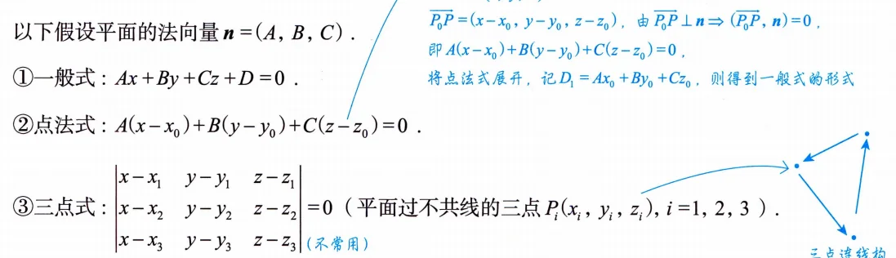
五种形式怎么选：点法式最常用（找到法向量和一点就收工）；一般式适合代数运算、读法向量最方便；截距式画图直观；三点式不常用（知道不共线三点时直接用）。平面束是处理"过一条定直线的平面"的专用工具：
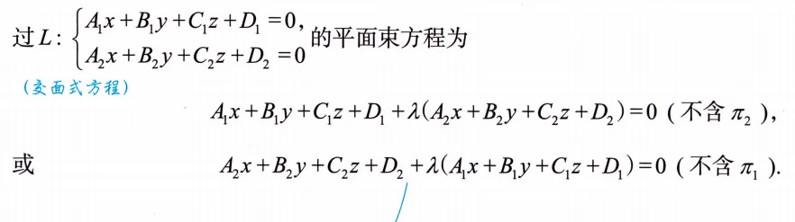
过 \( L:\begin{cases}A_1x+B_1y+C_1z+D_1=0\\A_2x+B_2y+C_2z+D_2=0\end{cases} \)（要求 \( (A_1,B_1,C_1) \) 与 \( (A_2,B_2,C_2) \) 不成比例）的平面可设成 \( A_1x+B_1y+C_1z+D_1+\lambda(A_2x+B_2y+C_2z+D_2)=0 \)，它不含 \( \pi_2 \) 本身（相当于单参数取不到 \( \pi_2 \) 那一个；书的边注指出完整的平面族由 \( \lambda\boldsymbol{n}_1+\mu\boldsymbol{n}_2 \) 型双参数生成）。若担心要找的平面恰好是 \( \pi_2 \)，改写成 \( A_2x+B_2y+C_2z+D_2+\lambda(A_1x+B_1y+C_1z+D_1)=0 \)（此时不含 \( \pi_1 \)），或最后单独验证 \( \pi_2 \)。求投影直线时先找"过 \( L \) 且与已知平面垂直"的平面，就用这一手。
七、直线方程的四种形式
定直线也只需两要素：方向向量 \( \boldsymbol{\tau}=(l,m,n) \) 加一点。最要紧的一条注：交面式（一般式）直线的方向向量 \( \boldsymbol{\tau}=\boldsymbol{n}_1\times\boldsymbol{n}_2 \)——直线是两个平面的交线，\( \boldsymbol{\tau} \) 既垂直 \( \boldsymbol{n}_1 \) 又垂直 \( \boldsymbol{n}_2 \)，所以取两法向量的叉积（印P511）。
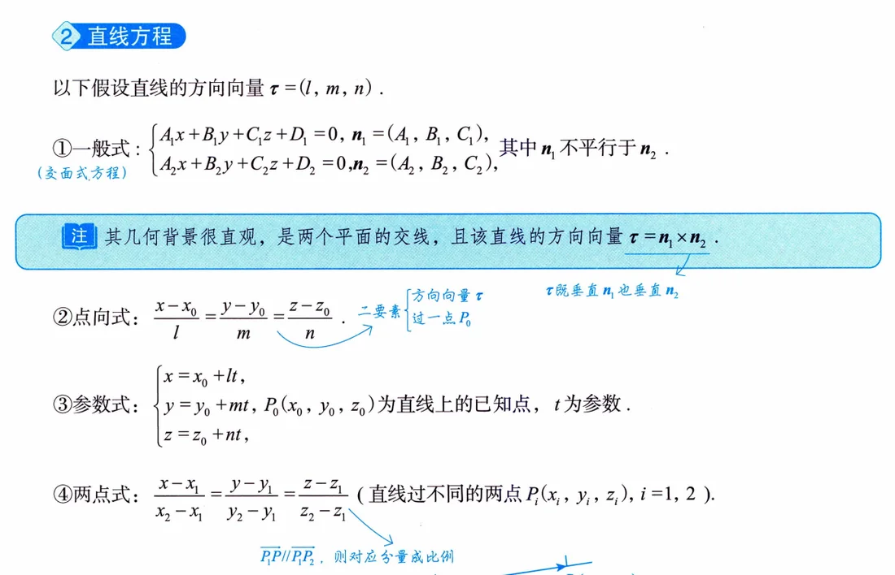
四种形式互化要熟：点向式化参数式（令比值为 \( t \)）；交面式化点向式（叉积得 \( \boldsymbol{\tau} \)，再解出交线上一点，习题17.1 的解答就是先化点向式再判断）；两点式来自 \( \overrightarrow{P_1P}\,//\,\overrightarrow{P_1P_2} \) 对应分量成比例。
八、距离公式
点到直线：\( d=\dfrac{|\boldsymbol{\tau}\times\overrightarrow{M_1M_0}|}{|\boldsymbol{\tau}|} \)，分子几何意义是"平行四边形面积"，除以底得高；注意式子里内层竖线是行列式（叉积），外层竖线是向量取模（印P511）。
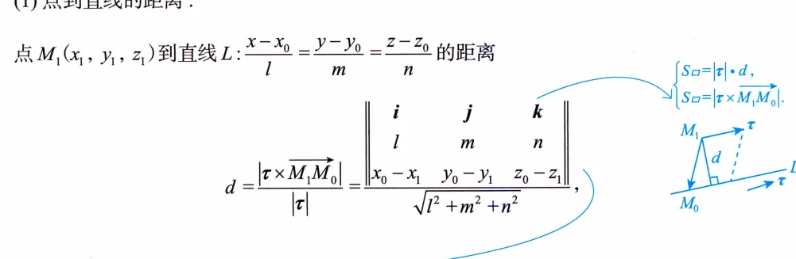
点到平面：\( d=\dfrac{|Ax_0+By_0+Cz_0+D|}{\sqrt{A^2+B^2+C^2}} \)。二维平面上点 \( P(x_0,y_0) \) 到直线 \( Ax+By+C=0 \) 的距离是它的特例 \( d=\dfrac{|Ax_0+By_0+C|}{\sqrt{A^2+B^2}} \)，书里用面积法把它推了一遍（分 \( B\neq0 \) 与 \( A\neq0,\,B=0 \) 两种情形，印P512）。
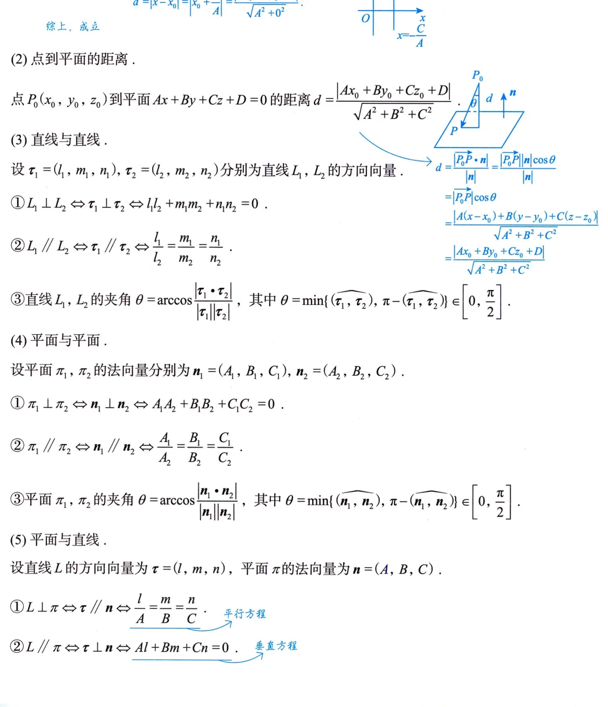
九、线线、面面、线面的位置关系与夹角
全部化成向量关系来判（印P512–513）：
- 直线与直线（方向向量 \( \boldsymbol{\tau}_1=(l_1,m_1,n_1),\boldsymbol{\tau}_2=(l_2,m_2,n_2) \)）：\( L_1\perp L_2\Leftrightarrow l_1l_2+m_1m_2+n_1n_2=0 \)；\( L_1\,//\,L_2\Leftrightarrow\dfrac{l_1}{l_2}=\dfrac{m_1}{m_2}=\dfrac{n_1}{n_2} \)；夹角 \( \theta=\arccos\dfrac{|\boldsymbol{\tau}_1\cdot\boldsymbol{\tau}_2|}{|\boldsymbol{\tau}_1||\boldsymbol{\tau}_2|} \)。
- 平面与平面（法向量 \( \boldsymbol{n}_1=(A_1,B_1,C_1),\boldsymbol{n}_2=(A_2,B_2,C_2) \)）：\( \pi_1\perp\pi_2\Leftrightarrow A_1A_2+B_1B_2+C_1C_2=0 \)；\( \pi_1\,//\,\pi_2\Leftrightarrow\dfrac{A_1}{A_2}=\dfrac{B_1}{B_2}=\dfrac{C_1}{C_2} \)；夹角 \( \theta=\arccos\dfrac{|\boldsymbol{n}_1\cdot\boldsymbol{n}_2|}{|\boldsymbol{n}_1||\boldsymbol{n}_2|} \)（取 \( [0,\pi/2] \) 上那个）。
- 平面与直线：\( L\perp\pi\Leftrightarrow\boldsymbol{\tau}\,//\,\boldsymbol{n}\Leftrightarrow\dfrac{l}{A}=\dfrac{m}{B}=\dfrac{n}{C} \)（平行方程）；\( L\,//\,\pi\Leftrightarrow\boldsymbol{\tau}\perp\boldsymbol{n}\Leftrightarrow Al+Bm+Cn=0 \)（垂直方程，此时还要看线上有没有点在面上来区分"平行"与"线在面内"）；线面夹角 \( \theta=\arcsin\dfrac{|\boldsymbol{\tau}\cdot\boldsymbol{n}|}{|\boldsymbol{\tau}||\boldsymbol{n}|} \)。
记忆锚点：线线、面面夹角用 arccos，线面夹角用 arcsin——因为线面角是 \( \dfrac{\pi}{2} \) 减去 \( \boldsymbol{\tau} \) 与 \( \boldsymbol{n} \) 的夹角，\( \sin\theta=\cos(\dfrac{\pi}{2}-\theta) \)。
十、空间曲线方程及其在坐标面上的投影
一般式 \( \Gamma:\begin{cases}F(x,y,z)=0\\G(x,y,z)=0\end{cases} \) 的几何背景是两个曲面的交线；参数式 \( x=\varphi(t),\,y=\psi(t),\,z=\omega(t),\ t\in[\alpha,\beta] \)。一般式化参数式：选取某直角坐标变量为自变量（看作参数），解出其他两变量为它的函数即得；但由于多值、根式甚至"解不出"的麻烦，常改用新变量作参数，或题设直接给参数方程（印P514）。
往 \( xOy \) 面投影：从方程组消去 \( z \) 得 \( \varphi(x,y)=0 \)，投影曲线包含于 \( \begin{cases}\varphi(x,y)=0\\z=0\end{cases} \)（原书措辞就是"包含于"，见下图）。口诀：往哪个坐标面投影就消哪个变量（\( xOy \) 消 \( z \)、\( xOz \) 消 \( y \)、\( yOz \) 消 \( x \)），再与坐标面方程联立（印P515）。
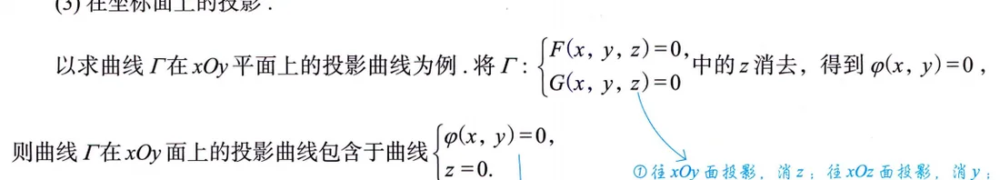
书里还教了一招"先投影再参数化"（印P515 注）：将 \( \begin{cases}F(x,y,z)=0\\G(x,y,z)=0\end{cases} \) 消去 \( z \) 得投影 \( \begin{cases}f(x,y)=0\\z=0\end{cases} \)；若 \( f(x,y)=0 \) 容易写出参数式 \( x=x(t),\,y=y(t),\ t\in I \)，代回原曲线方程，能解出单值的 \( z=z(t) \)，就得到原曲线的参数式。如 \( \Gamma:\begin{cases}x^2+y^2=1\\z=x+y\end{cases} \) 可化为 \( \begin{cases}x=\cos t\\y=\sin t\\z=\cos t+\sin t\end{cases}\ (0\le t\le 2\pi) \)。这招在第18讲把曲线积分化成定积分时是标准动作。
十一、二次曲面（识图与截痕）
五种标准二次曲面加马鞍面，考研认得出方程、画得出图就够了。"用平行于坐标面的平面去截"是识图的基本手段（截痕法，印P516）：
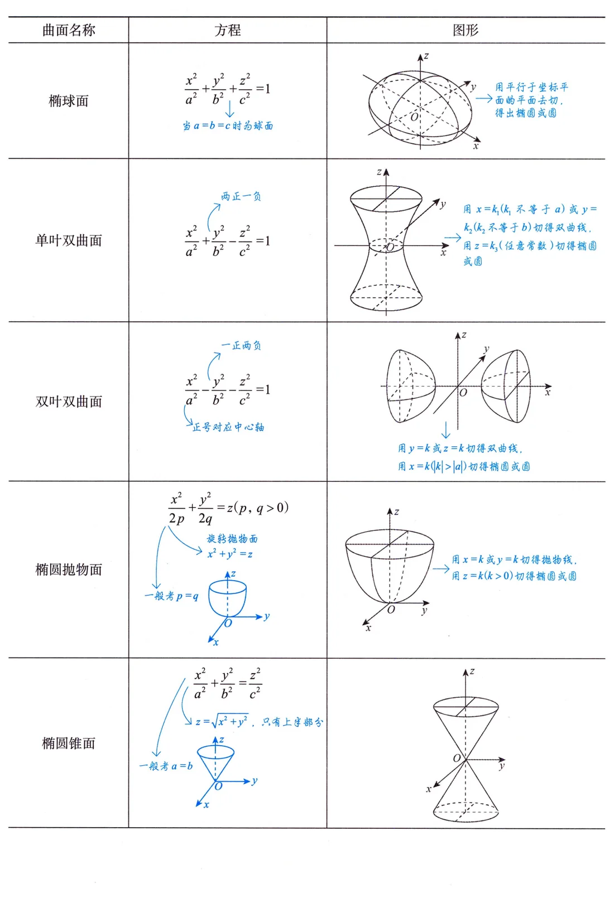
- 椭球面 \( \dfrac{x^2}{a^2}+\dfrac{y^2}{b^2}+\dfrac{z^2}{c^2}=1 \)：用平行于坐标面的平面去截，得椭圆或圆；\( a=b=c \) 时为球面。
- 单叶双曲面 \( \dfrac{x^2}{a^2}+\dfrac{y^2}{b^2}-\dfrac{z^2}{c^2}=1 \)（两正一负）：用 \( x=k \) 或 \( y=k \) 截得双曲线，用 \( z=k \) 截得椭圆。
- 双叶双曲面 \( \dfrac{x^2}{a^2}-\dfrac{y^2}{b^2}-\dfrac{z^2}{c^2}=1 \)（一正两负，正号对应中心轴）：用 \( y=k \) 或 \( z=k \) 截得双曲线，用 \( x=k\ (k>a) \) 截得椭圆或圆。
- 椭圆抛物面 \( \dfrac{x^2}{2p}+\dfrac{y^2}{2q}=z\ (p,q>0) \)：用 \( x=k \) 或 \( y=k \) 截得抛物线，用 \( z=k\ (k>0) \) 截得椭圆或圆；\( p=q \) 时为旋转抛物面，一般考 \( p=q \)。
- 椭圆锥面：一般考 \( a=b \)（圆锥面），表中图形按 \( z=\sqrt{x^2+y^2} \) 只画上半部分。
- 双曲抛物面（马鞍面） \( -\dfrac{x^2}{2p}+\dfrac{y^2}{2q}=z\ (p,q>0) \)：用 \( z=k\ (k>0) \) 截得双曲线，用 \( x=k \) 或 \( y=k \) 截得抛物线。
马鞍面（续表，印P517）的特例是 \( z=xy \)：在上图基础上令 \( x \) 轴与 \( y \) 轴逆时针旋转 \( \dfrac{\pi}{4} \)，坐标变换 \( z=\dfrac{y^2-x^2}{2}=\dfrac12(y+x)(y-x) \)，令 \( u=y+x,\ v=y-x \)，则 \( z=\dfrac12uv \)（差常数因子的马鞍面）。\( z=xy \) 中由 \( x+y=1 \) 截出的图形，后面三重积分、曲线积分、曲面积分还会见面——这是书里明说的伏笔（印P517）。
十二、柱面与旋转曲面
柱面：动直线沿定曲线平行移动所形成的曲面。方程缺哪个字母，母线就平行于哪条坐标轴：\( \dfrac{x^2}{a^2}+\dfrac{y^2}{b^2}=1 \) 缺 \( z \)，是母线平行于 \( z \) 轴的椭圆柱面（准线是椭圆或圆）；\( \dfrac{x^2}{a^2}-\dfrac{y^2}{b^2}=1 \) 是双曲柱面（准线是双曲线）；\( y=ax^2\ (a>0) \) 是抛物柱面（准线是抛物线）（印P517）。
旋转曲面：曲线 \( \Gamma \) 绕一条定直线旋转一周所形成的曲面。一般求法（印P518）：设定直线过 \( M_0 \)、方向向量 \( \boldsymbol{\tau}=(l,m,n) \)，在母线 \( \Gamma \) 上任取一点 \( M_1(x_1,y_1,z_1) \)，则过 \( M_1 \) 的纬圆上任一点 \( P(x,y,z) \) 满足两个条件——\( \overrightarrow{M_1P}\perp\boldsymbol{\tau} \)（即 \( l(x-x_1)+m(y-y_1)+n(z-z_1)=0 \)）与 \( |M_0P|=|M_0M_1| \)（即两点到转轴等距）：
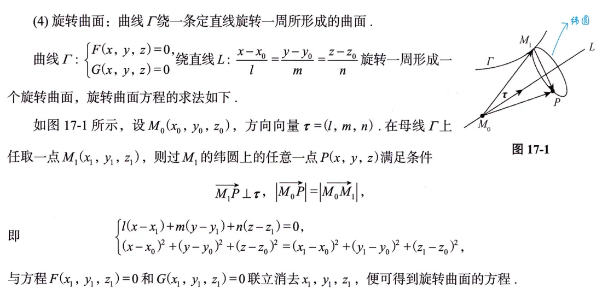
把它们与 \( F(x_1,y_1,z)=0,\ G(x_1,y_1,z)=0 \) 联立，消去 \( x_1,y_1,z_1 \) 即得旋转曲面方程。
常考的是绕坐标轴（印P518 注）：\( \Gamma \) 绕 \( z \) 轴旋转时，纬圆上点满足 \( |OP|=|OM_1| \) 且 \( z=z_1 \)，即 \( x^2+y^2=x_1^2+y_1^2 \)；从 \( \begin{cases}F(x_1,y_1,z)=0\\G(x_1,y_1,z)=0\\x^2+y^2=x_1^2+y_1^2\end{cases} \) 消去 \( x_1,y_1 \) 即得。若能解出 \( x_1=f_1(z),\ y_1=f_2(z) \)，直接写 \( x^2+y^2=[f_1(z)]^2+[f_2(z)]^2 \)。书上例子：\( \begin{cases}x=0\\y^2=1+(z-1)^2\end{cases} \) 绕 \( z \) 轴一周得 \( x^2+y^2=0^2+1+(z-1)^2 \)，即 \( x^2+y^2-(z-1)^2=1 \)（单叶双曲面）。
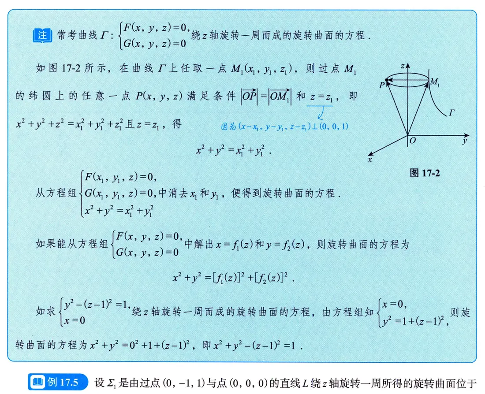
十三、空间曲线的切线与法平面
参数式给出曲线 \( x=x(t),y=y(t),z=z(t),\ t\in I \)（可导且三个导数不同时为零），在 \( P_0(x_0,y_0,z_0) \)（对应 \( t_0 \)）处的切向量 \( \boldsymbol{\tau}=(x'(t_0),y'(t_0),z'(t_0)) \)，于是切线 \( \dfrac{x-x_0}{x'(t_0)}=\dfrac{y-y_0}{y'(t_0)}=\dfrac{z-z_0}{z'(t_0)} \)，法平面 \( x'(t_0)(x-x_0)+y'(t_0)(y-y_0)+z'(t_0)(z-z_0)=0 \)。
方程组给出曲线 \( \begin{cases}F(x,y,z)=0\\G(x,y,z)=0\end{cases} \)：当 \( \dfrac{\partial(F,G)}{\partial(y,z)}\neq0 \) 时可确定 \( y=y(x),\,z=z(x) \)，切向量用雅可比行列式算——但记住本质：切向量是两个曲面在 \( P_0 \) 处两个法向量（梯度向量）的叉积 \( \boldsymbol{\tau}=\boldsymbol{n}_F\times\boldsymbol{n}_G=(A,B,C) \)，曲线既在曲面 \( F \) 上又在曲面 \( G \) 上，切向量就同时垂直两个法向量（印P519）。
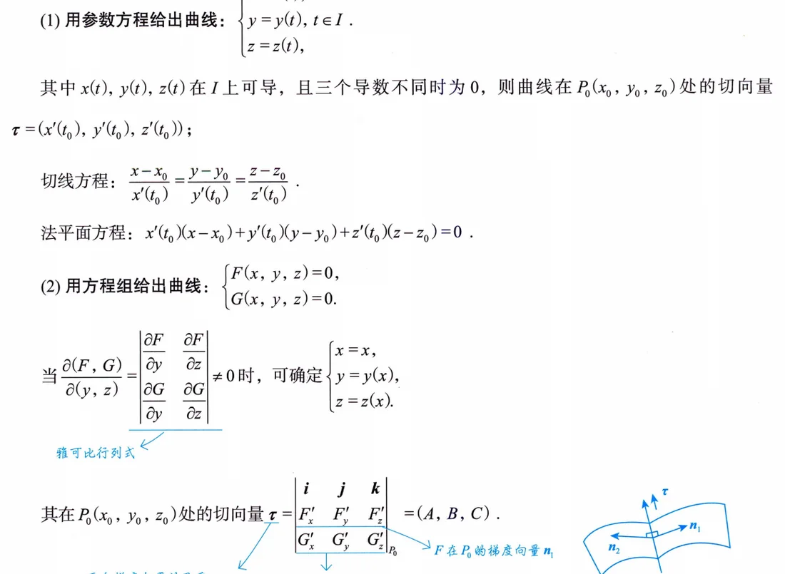
十四、空间曲面的切平面与法线
隐式 \( F(x,y,z)=0 \)（\( F \) 一阶偏导连续）：法向量 \( \boldsymbol{n}=(F_x',F_y',F_z')\big|_{P_0} \)（就是 \( F \) 在 \( P_0 \) 的梯度向量），切平面 \( F_x'\big|_{P_0}(x-x_0)+F_y'\big|_{P_0}(y-y_0)+F_z'\big|_{P_0}(z-z_0)=0 \)，法线把三个系数挪去当分母。
显式 \( z=f(x,y) \)：移项写成 \( f(x,y)-z=0 \)，法向量 \( \boldsymbol{n}=(f_x'(x_0,y_0),f_y'(x_0,y_0),-1) \)，方向向下；若改写 \( z-f(x,y)=0 \)，则法向量为 \( (-f_x'(x_0,y_0),-f_y'(x_0,y_0),1) \)，第三分量为正，与 \( z \) 轴正向夹角为锐角，即方向向上。切平面 \( f_x'(x_0,y_0)(x-x_0)+f_y'(x_0,y_0)(y-y_0)-(z-z_0)=0 \)（印P520）。题目指定法向量朝向时（比如"指向朝上"），就靠这组符号切换。
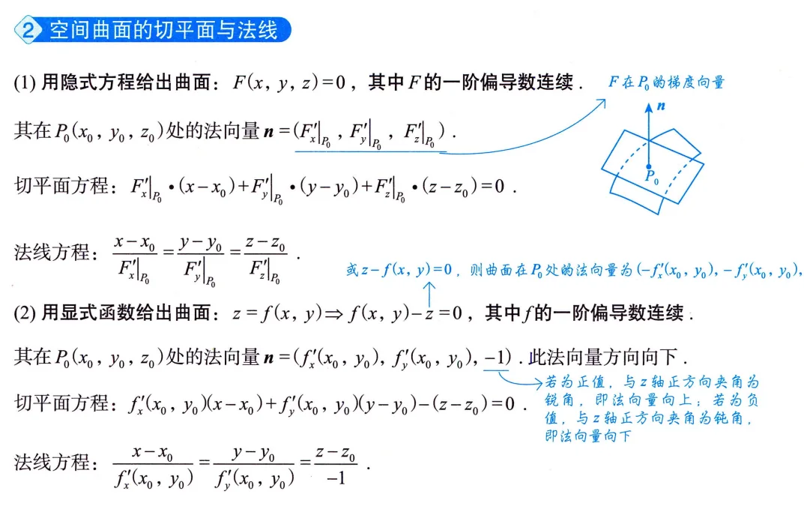
十五、方向导数与梯度
先说"场"：场就是空间区域 \( \Omega \) 上的一种对应法则。每点对应一个数是数量场（如温度场，只讲大小不讲方向）；每点对应一个向量 \( \boldsymbol{F}=P\boldsymbol{i}+Q\boldsymbol{j}+R\boldsymbol{k} \) 是向量场（如引力场，既讲大小也讲方向）（印P521）。
方向导数：\( u=u(x,y,z) \) 沿从 \( P_0 \) 出发的射线 \( \boldsymbol{l} \)，写 \( x-x_0=\Delta x=t\cos\alpha,\ y-y_0=\Delta y=t\cos\beta,\ z-z_0=\Delta z=t\cos\gamma \)，\( t=\sqrt{(\Delta x)^2+(\Delta y)^2+(\Delta z)^2} \) 表示 \( P \) 与 \( P_0 \) 的距离，若
\[ \lim_{t\to0^+}\frac{u(x_0+t\cos\alpha,\ y_0+t\cos\beta,\ z_0+t\cos\gamma)-u(x_0,y_0,z_0)}{t} \]
存在，就称为 \( u \) 在 \( P_0 \) 沿 \( \boldsymbol{l} \) 方向的方向导数，记作 \( \dfrac{\partial u}{\partial\boldsymbol{l}}\bigg|_{P_0} \)。注意极限是单侧的（\( t\to0^+ \)，射线只能往前走）。
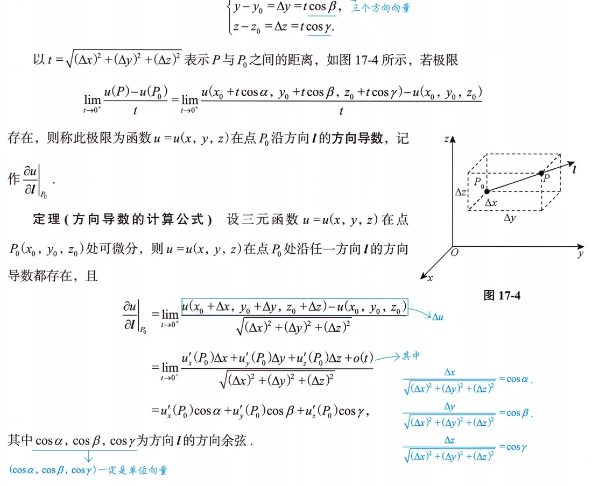
计算定理：\( u \) 在 \( P_0 \) 处可微分，则沿任一方向 \( \boldsymbol{l} \) 的方向导数都存在，且
\[ \frac{\partial u}{\partial\boldsymbol{l}}\bigg|_{P_0}=u_x'(P_0)\cos\alpha+u_y'(P_0)\cos\beta+u_z'(P_0)\cos\gamma, \]
推导就是代 \( \Delta u=u_x'\Delta x+u_y'\Delta y+u_z'\Delta z+o(t) \)，再除以 \( t \)、令 \( t\to0^+ \)，用 \( \Delta x/t=\cos\alpha \) 等。（\( \cos\alpha,\cos\beta,\cos\gamma \)）一定是单位向量；二元函数情况与三元完全类似（印P522）。
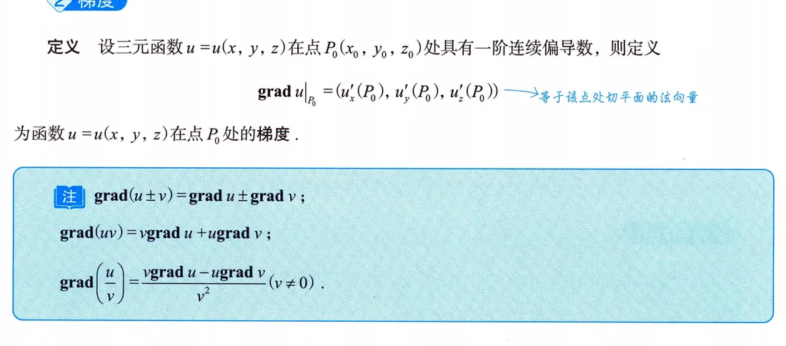
梯度：\( u \) 在 \( P_0 \) 具有一阶连续偏导数时，定义 \( \operatorname{grad}u\big|_{P_0}=(u_x',u_y',u_z')\big|_{P_0} \)。四则运算法则与求导同款：\( \operatorname{grad}(uv)=v\operatorname{grad}u+u\operatorname{grad}v \)，\( \operatorname{grad}\dfrac{u}{v}=\dfrac{v\operatorname{grad}u-u\operatorname{grad}v}{v^2}\ (v\neq0) \)。
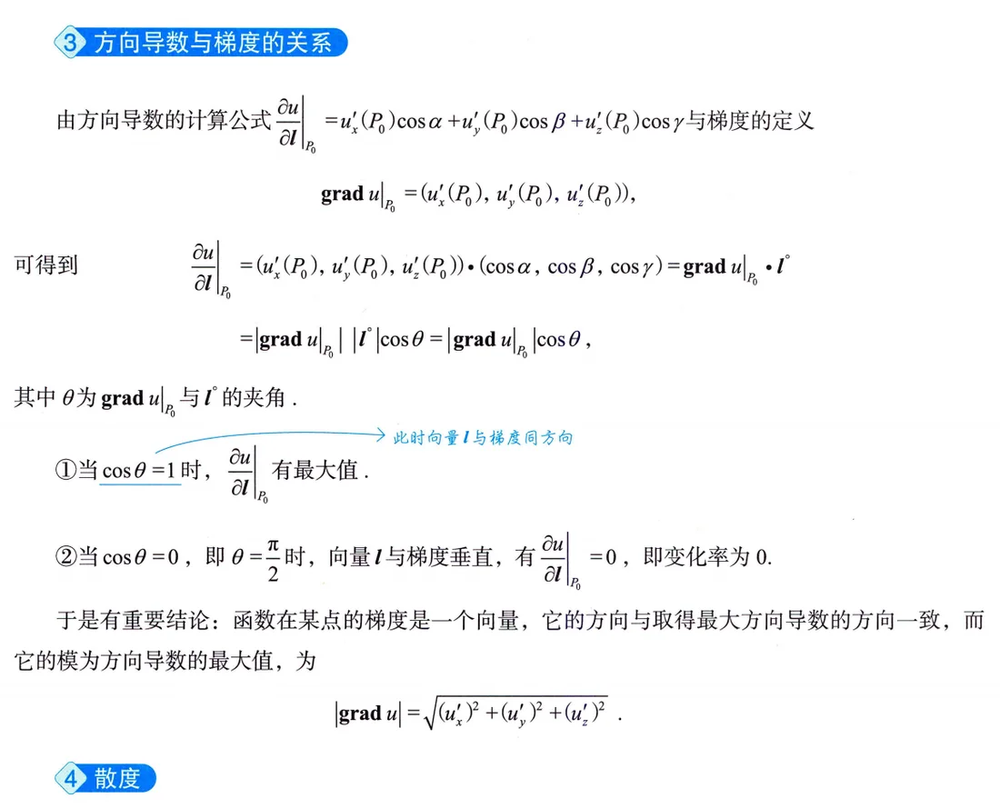
关系浓缩成一行：\( \dfrac{\partial u}{\partial\boldsymbol{l}}\bigg|_{P_0}=\operatorname{grad}u\big|_{P_0}\cdot\boldsymbol{l}^{\circ}=|\operatorname{grad}u|\cos\theta \)（\( \theta \) 为梯度与 \( \boldsymbol{l} \) 的夹角）。①\( \cos\theta=1 \)（\( \boldsymbol{l} \) 与梯度同向）时方向导数最大，最大值为模 \( |\operatorname{grad}u|=\sqrt{u_x'^2+u_y'^2+u_z'^2} \)；②\( \cos\theta=0 \)（与梯度垂直）时方向导数为零，变化率为零。重要结论：函数在某点的梯度方向就是取得最大方向导数的方向，梯度的模就是方向导数的最大值（印P523）。
十六、散度与旋度
对向量场 \( \boldsymbol{A}(x,y,z)=P(x,y,z)\boldsymbol{i}+Q(x,y,z)\boldsymbol{j}+R(x,y,z)\boldsymbol{k} \)：
\[ \operatorname{div}\boldsymbol{A}=\frac{\partial P}{\partial x}+\frac{\partial Q}{\partial y}+\frac{\partial R}{\partial z},\qquad \operatorname{rot}\boldsymbol{A}=\begin{vmatrix}\boldsymbol{i}&\boldsymbol{j}&\boldsymbol{k}\\[2pt] \dfrac{\partial}{\partial x}&\dfrac{\partial}{\partial y}&\dfrac{\partial}{\partial z}\\[6pt] P&Q&R\end{vmatrix} \]
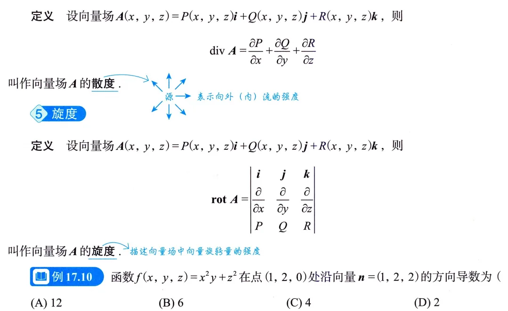
按第一行展开：\( \operatorname{rot}\boldsymbol{A}=\left(\dfrac{\partial R}{\partial y}-\dfrac{\partial Q}{\partial z}\right)\boldsymbol{i}+\left(\dfrac{\partial P}{\partial z}-\dfrac{\partial R}{\partial x}\right)\boldsymbol{j}+\left(\dfrac{\partial Q}{\partial x}-\dfrac{\partial P}{\partial y}\right)\boldsymbol{k} \)。散度是个数，描述向量场向外（内）流的强度；旋度是个向量，描述向量场中向量旋转量的强度（印P523）。这两个量在第18讲的高斯公式、斯托克斯公式里还要回来当主角。
典型例题精讲
例17.1 可微保证"法向型"极限为零
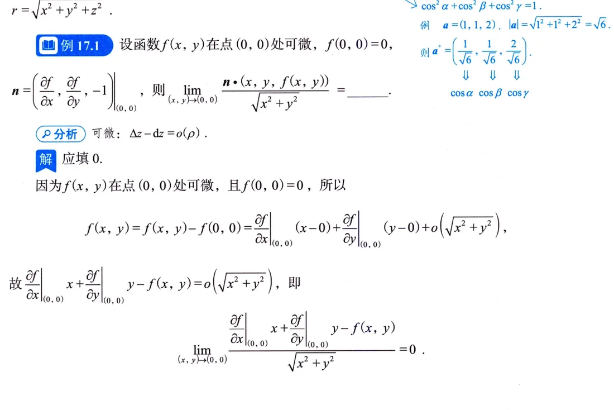
题 设函数 \( f(x,y) \) 在点 \( (0,0) \) 处可微，\( f(0,0)=0 \)，\( \boldsymbol{n}=\left(f_x'(0,0),\,f_y'(0,0),\,-1\right) \)，则 \( \lim\limits_{(x,y)\to(0,0)}\dfrac{\boldsymbol{n}\cdot(x,\,y,\,f(x,y))}{\sqrt{x^2+y^2}}= \)____。
思路 可微的定义式 \( \Delta z-\mathrm{d}z=o(\rho) \) 直接就是分子的化身：分子点乘开出来正好是"线性主部减函数值"。
要点 因为 \( f \) 在 \( (0,0) \) 可微且 \( f(0,0)=0 \)，所以
\[ f(x,y)=f_x'(0,0)x+f_y'(0,0)y+o\left(\sqrt{x^2+y^2}\right), \]
于是分子 \( \boldsymbol{n}\cdot(x,y,f(x,y))=f_x'(0,0)x+f_y'(0,0)y-f(x,y)=-o(\sqrt{x^2+y^2}) \)，除以 \( \sqrt{x^2+y^2} \) 取极限即得 0。应填 0。
注 \( \boldsymbol{n} \) 恰是曲面 \( z=f(x,y) \) 在原点处的切平面法向量（朝下那支），这个极限说的就是"切平面逼近曲面"的一阶精度；反过来它也说明：可微 \( \Rightarrow \) 这类沿任一方向的退化方向导数都存在（对照印P522 的定理前提）。
例17.2 求与两条直线都平行且过原点的平面
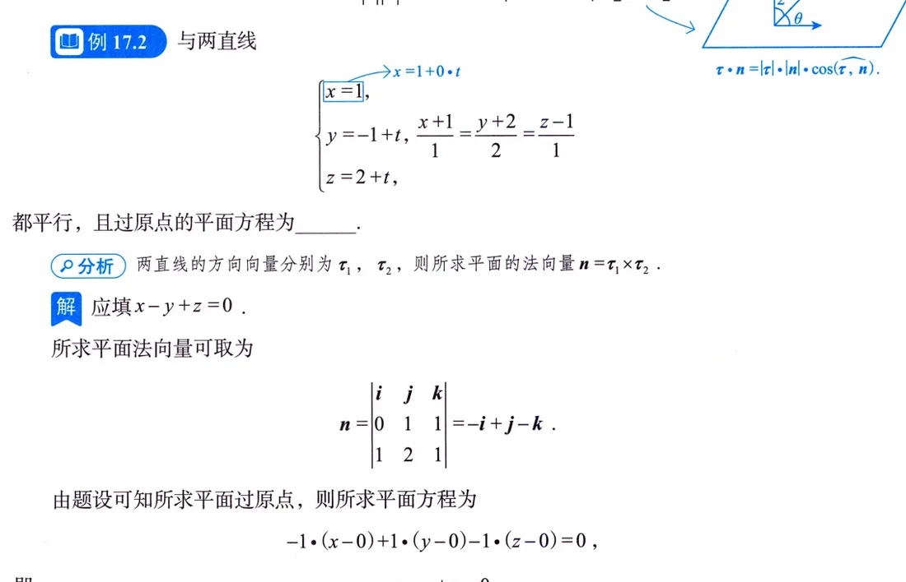
题 求与两直线 \( \begin{cases}x=1\\y=-1+t\\z=2+t\end{cases} \) 及 \( \dfrac{x+1}{1}=\dfrac{y+2}{2}=\dfrac{z-1}{1} \) 都平行，且过原点的平面方程。
思路 平面与两条直线都平行，法向量就同时垂直两个方向向量，取 \( \boldsymbol{n}=\boldsymbol{\tau}_1\times\boldsymbol{\tau}_2 \)；再由"过原点"定点，点法式收工。
要点 参数式直线 \( \begin{cases}x=1\\y=-1+t\\z=2+t\end{cases} \) 的方向向量就是 \( t \) 的系数，\( \boldsymbol{\tau}_1=(0,1,1) \)；对称式直线直接读分母，\( \boldsymbol{\tau}_2=(1,2,1) \)。于是
\[ \boldsymbol{n}=\begin{vmatrix}\boldsymbol{i}&\boldsymbol{j}&\boldsymbol{k}\\0&1&1\\1&2&1\end{vmatrix}=-\boldsymbol{i}+\boldsymbol{j}-\boldsymbol{k}, \]
过原点得 \( -1\cdot(x-0)+1\cdot(y-0)-1\cdot(z-0)=0 \)，即 \( x-y+z=0 \)。应填 \( x-y+z=0 \)。
注 参数式读方向看系数、对称式看分母，来源不同别搞混。
例17.3 投影直线：平面束的标准用法
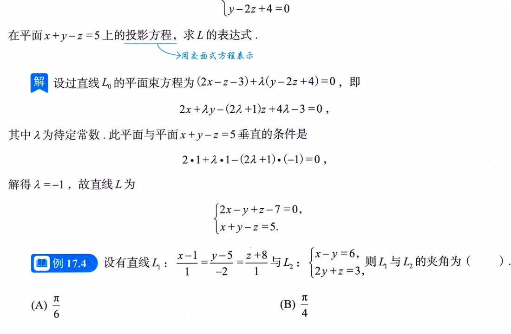
题 已知直线 \( L \) 是直线 \( L_0:\begin{cases}2x-z-3=0\\y-2z+4=0\end{cases} \) 在平面 \( x+y-z=5 \) 上的投影，求 \( L \) 的方程（用交面式方程表示）。
思路 求 \( L_0 \) 在平面上的投影 = 过 \( L_0 \) 作与该平面垂直的平面 \( \pi_1 \)，再与原平面联立。过 \( L_0 \) 的平面用平面束设出来。
要点 设过 \( L_0 \) 的平面束 \( (2x-z-3)+\lambda(y-2z+4)=0 \)，即 \( 2x+\lambda y-(2\lambda+1)z+4\lambda-3=0 \)。与 \( x+y-z=5 \) 垂直，法向量点积为零：\( 2\cdot1+\lambda\cdot1-(2\lambda+1)\cdot(-1)=0 \)，解得 \( \lambda=-1 \)，故
\[ L:\begin{cases}2x-y+z-7=0\\x+y-z=5.\end{cases} \]
注 答案保留交面式即可，题目原话就是"用交面式方程表示"。
例17.4 两直线的夹角
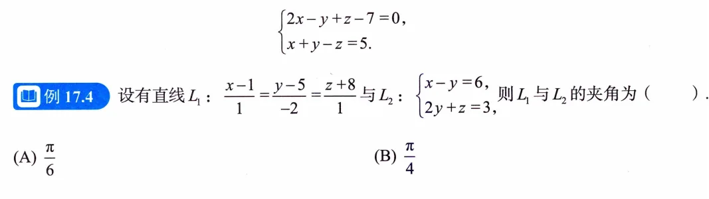
题 设有直线 \( L_1:\dfrac{x-1}{1}=\dfrac{y-5}{-2}=\dfrac{z+8}{1} \) 与 \( L_2:\begin{cases}x-y=6\\2y+z=3\end{cases} \)，则 \( L_1 \) 与 \( L_2 \) 的夹角为（ ）。(A) \( \dfrac{\pi}{6} \) (B) \( \dfrac{\pi}{4} \) (C) \( \dfrac{\pi}{3} \) (D) \( \dfrac{\pi}{2} \)
思路 先分别求出两条直线的方向向量，再套夹角公式 \( \theta=\arccos\dfrac{|\boldsymbol{\tau}_1\cdot\boldsymbol{\tau}_2|}{|\boldsymbol{\tau}_1||\boldsymbol{\tau}_2|} \)。
要点 点向式读分母：\( \boldsymbol{\tau}_1=(1,-2,1) \)；交面式叉积：\( \boldsymbol{\tau}_2=\boldsymbol{n}_1\times\boldsymbol{n}_2=(1,-1,0)\times(0,2,1)=-\boldsymbol{i}-\boldsymbol{j}+2\boldsymbol{k} \)。于是
\[ \cos\theta=\frac{|1\cdot(-1)+(-2)\cdot(-1)+1\cdot2|}{\sqrt6\cdot\sqrt6}=\frac{3}{6}=\frac12,\qquad \theta=\frac{\pi}{3}. \]
应选 (C)。
注 分子的绝对值别丢——夹角规定在 \( [0,\pi/2] \) 内取，丢了绝对值可能算出补角。
例17.5 旋转曲面与交线的投影
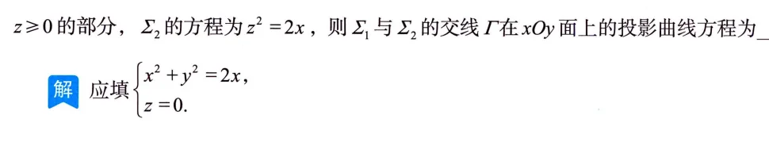
题 设 \( \Sigma_1 \) 是由过点 \( (0,-1,1) \) 与点 \( (0,0,0) \) 的直线 \( L \) 绕 \( z \) 轴旋转一周所得的旋转曲面位于 \( z\ge0 \) 的部分，\( \Sigma_2 \) 的方程为 \( z^2=2x \)，则 \( \Sigma_1 \) 与 \( \Sigma_2 \) 的交线 \( \Gamma \) 在 \( xOy \) 面上的投影曲线方程为____。
思路 先写出过两点的直线 \( L \)，绕 \( z \) 轴旋转套 \( x^2+y^2=x_1^2+y_1^2 \) 得 \( \Sigma_1 \)，再与 \( \Sigma_2 \) 联立消 \( z \) 得投影。
要点 两点式 \( \dfrac{x}{0}=\dfrac{y+1}{1}=\dfrac{z-1}{-1} \)，参数式 \( \begin{cases}x=0\\y=-1+t\\z=1-t\end{cases} \)，即 \( x=0,\ y=-z \)。绕 \( z \) 轴：\( x^2+y^2=0^2+(-z)^2=z^2 \)，得 \( \Sigma_1:\ z=\sqrt{x^2+y^2} \)（只取 \( z\ge0 \) 的锥面上半部分）。与 \( z^2=2x \) 联立消 \( z \) 得 \( x^2+y^2=2x \)，故投影曲线 \( \begin{cases}x^2+y^2=2x\\z=0\end{cases} \)。应填 \( \begin{cases}x^2+y^2=2x\\z=0.\end{cases} \)
注 \( \Sigma_1 \) 只取 \( z\ge0 \) 部分，所以锥面写 \( z=\sqrt{x^2+y^2} \)；消 \( z \) 之后必须补上 \( z=0 \) 才是完整投影。
例17.6 参数方程曲线的切线（含变限积分）
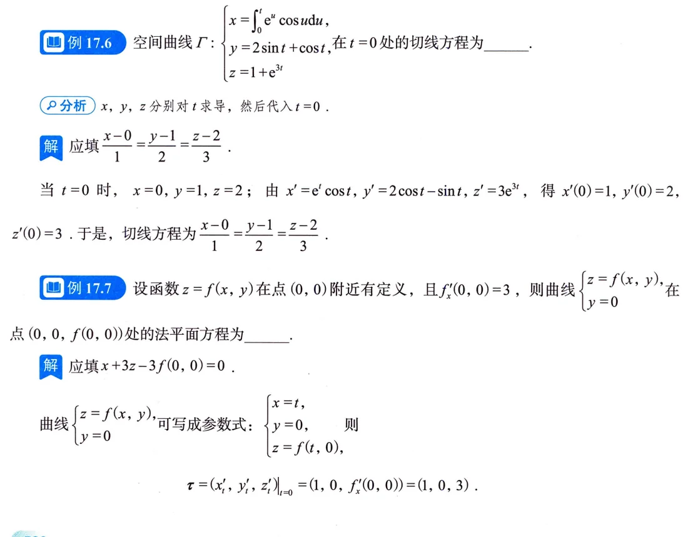
题 空间曲线 \( \Gamma:\begin{cases}x=\displaystyle\int_0^t\mathrm{e}^{u}\cos u\,\mathrm{d}u,\\ y=2\sin t+\cos t,\\ z=1+\mathrm{e}^{3t}\end{cases} \) 在 \( t=0 \) 处的切线方程为____。
思路 \( x,y,z \) 分别对 \( t \) 求导，然后代入 \( t=0 \)。\( x(t) \) 是变限积分，直接用变限积分求导公式，别傻乎乎先积出来。
要点 \( x'(t)=\mathrm{e}^{t}\cos t,\ y'(t)=2\cos t-\sin t,\ z'(t)=3\mathrm{e}^{3t} \)。当 \( t=0 \) 时点为 \( (0,1,2) \)，\( \boldsymbol{\tau}=(x'(0),y'(0),z'(0))=(1,2,3) \)，于是切线方程
\[ x=\frac{y-1}{2}=\frac{z-2}{3}. \]
例17.7 抽象函数曲线的法平面
题 设函数 \( z=f(x,y) \) 在点 \( (0,0) \) 附近有定义，且 \( f_x'(0,0)=3 \)，则曲线 \( \begin{cases}z=f(x,y)\\y=0\end{cases} \) 在点 \( (0,0,f(0,0)) \) 处的法平面方程为____。
思路 曲线由一般式给出，先参数化：\( x=t,\ y=0,\ z=f(t,0) \)，切向量 \( \boldsymbol{\tau}=(1,0,f_x'(0,0)) \)，套法平面公式。
要点 \( z=f(t,0) \) 对 \( t \) 求导就是 \( f \) 对第一个变量求偏导（\( y=0 \) 固定不动），故 \( \boldsymbol{\tau}=(1,0,3) \)，法平面
\[ 1\cdot(x-0)+0\cdot(y-0)+3\cdot\bigl(z-f(0,0)\bigr)=0,\qquad 即\ x+3z-3f(0,0)=0. \]
应填 \( x+3z-3f(0,0)=0 \)。
注 答案里 \( f(0,0) \) 保留符号不必算出——点的 \( z \) 坐标就是它；这类"抽象函数+一般式曲线"的题，参数化永远是第一步。
例17.8 隐式曲面的切平面
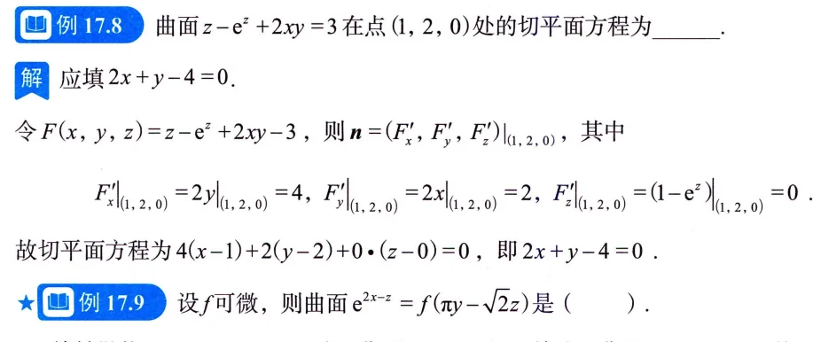
题 曲面 \( z-\mathrm{e}^z+2xy=3 \) 在点 \( (1,2,0) \) 处的切平面方程为____。
思路 隐式曲面求切平面：先移项成 \( F=0 \)，法向量 \( \boldsymbol{n}=(F_x',F_y',F_z')\big|_{P_0} \)，套点法式。
要点 令 \( F=z-\mathrm{e}^z+2xy-3 \)，在 \( (1,2,0) \) 处 \( F_x'=2y=4 \)，\( F_y'=2x=2 \)，\( F_z'=1-\mathrm{e}^z=0 \)。切平面 \( 4(x-1)+2(y-2)+0\cdot(z-0)=0 \)，即 \( 2x+y-4=0 \)。应填 \( 2x+y-4=0 \)。
注 \( F_z' \) 在 \( z=0 \) 处恰好为零，法向量变成 \( (4,2,0) \)，流程照走，别觉得奇怪——切平面照样是竖着的平面。
例17.9 判定曲面是柱面
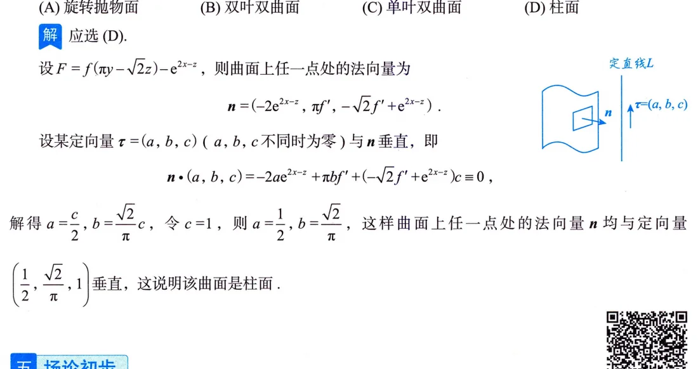
题 设 \( f \) 可微，则曲面 \( \mathrm{e}^{2x-z}=f(\pi y-\sqrt2 z) \) 是（ ）。(A) 旋转抛物面 (B) 双叶双曲面 (C) 单叶双曲面 (D) 柱面
思路 要说明曲面是柱面，等价于找一个固定方向，使曲面上任一点的法向量都与它垂直（这个方向就是母线方向）。
要点 设 \( F=f(\pi y-\sqrt2 z)-\mathrm{e}^{2x-z} \)，则任一点法向量 \( \boldsymbol{n}=\left(-2\mathrm{e}^{2x-z},\ \pi f',\ -\sqrt2 f'+\mathrm{e}^{2x-z}\right) \)。设定向量 \( \boldsymbol{\tau}=(a,b,c) \) 使 \( \boldsymbol{n}\cdot(a,b,c)\equiv0 \)：\( -2a\mathrm{e}^{2x-z}+\pi bf'+(-\sqrt2 f'+\mathrm{e}^{2x-z})c=0 \)。比较 \( \mathrm{e}^{2x-z} \) 与 \( f' \) 的系数得 \( a=\dfrac{c}{2},\ b=\dfrac{\sqrt2}{\pi}c \)，取 \( c=1 \)，得定向量 \( \left(\dfrac12,\dfrac{\sqrt2}{\pi},1\right) \) 与所有法向量垂直，故曲面是柱面。应选 (D)。
注 "待定一个与所有法向量垂直的定向量"是判柱面的通用套路，比死背方程形状可靠——抽象函数曲面只能这么打。
例17.10 方向导数的直接计算
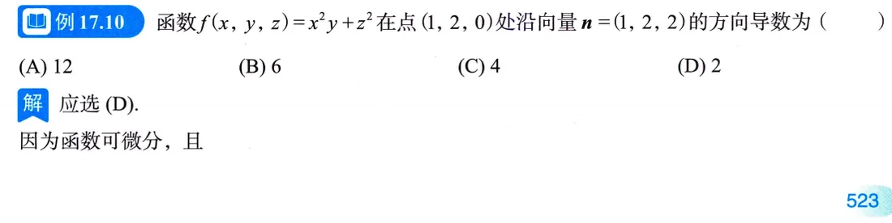
题 函数 \( f(x,y,z)=x^2y+2 \) 在点 \( (1,2,0) \) 处沿向量 \( \boldsymbol{n}=(1,2,2) \) 的方向导数为（ ）。(A) 12 (B) 6 (C) 4 (D) 2
思路 函数可微，直接套计算公式：三个偏导数点乘单位方向向量。
要点 \( f_x'=2xy\big|_{(1,2,0)}=4 \)，\( f_y'=x^2\big|_{(1,2,0)}=1 \)，\( f_z'=0 \)（函数不含 \( z \)，第三项直接消失）。与 \( \boldsymbol{n} \) 同方向的单位向量为 \( \left(\dfrac13,\dfrac23,\dfrac23\right) \)，所以
\[ \frac{\partial f}{\partial\boldsymbol{n}}\bigg|_{(1,2,0)}=4\times\frac13+1\times\frac23+0\times\frac23=2. \]
应选 (D)。
注 两步固定动作：偏导数、方向单位化，缺一步就错。
例17.11 由"最大方向导数"反求参数
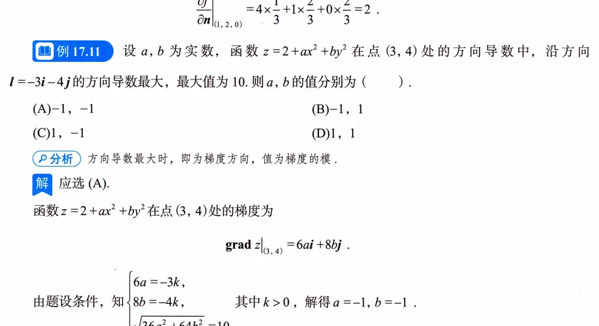
题 设 \( a,b \) 为实数，函数 \( z=2+ax^2+by^2 \) 在点 \( (3,4) \) 处的方向导数中，沿方向 \( \boldsymbol{l}=-3\boldsymbol{i}-4\boldsymbol{j} \) 的方向导数最大，最大值为 10，则 \( a,b \) 的值分别为（ ）。(A) \( -1,-1 \) (B) \( -1,1 \) (C) \( 1,-1 \) (D) \( 1,1 \)
思路 方向导数最大的方向就是梯度方向，最大值是梯度的模——把"最大"翻译成"梯度与 \( \boldsymbol{l} \) 同向平行"。
要点 \( \operatorname{grad}z\big|_{(3,4)}=6a\boldsymbol{i}+8b\boldsymbol{j} \)。由题设条件知它与 \( (-3,-4) \) 同向：设 \( 6a=-3k,\ 8b=-4k \)，其中 \( k>0 \)（保证同向不反向），且模 \( \sqrt{36a^2+64b^2}=10 \)。由前两式 \( a=b=-\dfrac{k}{2} \)，代入模条件 \( \sqrt{\dfrac{36k^2+64k^2}{4}}=5k=10 \)，得 \( k=2 \)，解得 \( a=-1,\ b=-1 \)。应选 (A)。
注 同向平行要引进 \( k>0 \) 而不是直接写比例式——直接写会分不清 \( (6a,8b) \) 与 \( (-3,-4) \) 同向还是反向。
例17.12 由两个方向导数解出偏导数
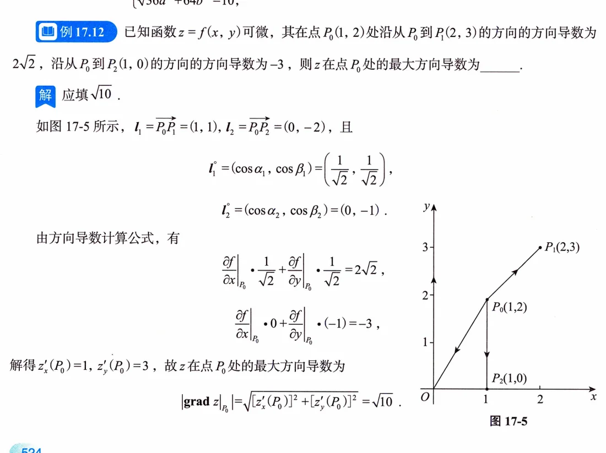
题 已知函数 \( z=f(x,y) \) 可微，其在点 \( P_0(1,2) \) 处沿从 \( P_0 \) 到 \( P_1(2,3) \) 的方向的方向导数为 \( 2\sqrt2 \)，沿从 \( P_0 \) 到 \( P_2(1,0) \) 的方向的方向导数为 \( -3 \)，则 \( z \) 在点 \( P_0 \) 处的最大方向导数为____。
思路 两个方向导数条件，就是关于 \( f_x'(P_0),\,f_y'(P_0) \) 的两个线性方程；解出来后，最大方向导数就是梯度模。
要点 \( \boldsymbol{l}_1=\overrightarrow{P_0P_1}=(1,1) \)，单位化 \( \boldsymbol{l}_1^{\circ}=\left(\dfrac{1}{\sqrt2},\dfrac{1}{\sqrt2}\right) \)；\( \boldsymbol{l}_2=\overrightarrow{P_0P_2}=(0,-2) \)，单位化 \( \boldsymbol{l}_2^{\circ}=(0,-1) \)。由方向导数计算公式
\[ \begin{cases} f_x'(P_0)\cdot\dfrac{1}{\sqrt2}+f_y'(P_0)\cdot\dfrac{1}{\sqrt2}=2\sqrt2,\\ f_x'(P_0)\cdot 0+f_y'(P_0)\cdot(-1)=-3, \end{cases} \]
解得 \( f_x'(P_0)=1,\ f_y'(P_0)=3 \)，故最大方向导数 \( |\operatorname{grad}z|_{P_0}=\sqrt{1^2+3^2}=\sqrt{10} \)。应填 \( \sqrt{10} \)。
注 "沿从 \( P_0 \) 到 \( P_1 \) 的方向"指两点连线方向，先化向量再单位化，不能拿坐标直接当方向余弦。
推广（印P525，原书紧跟本题给出）：设 \( z=f(x,y) \) 可微，从任意点 \( P_0 \) 出发沿两条不共线方向 \( \boldsymbol{l}_1=(\cos\alpha_1,\cos\beta_1) \) 与 \( \boldsymbol{l}_2=(\cos\alpha_2,\cos\beta_2) \) 的方向导数 \( \dfrac{\partial f}{\partial\boldsymbol{l}_1},\dfrac{\partial f}{\partial\boldsymbol{l}_2} \) 满足线性方程组（未知数 \( f_x'\big|_{P_0},f_y'\big|_{P_0} \)，系数行列式恰是两方向不共线保证非零）。(1) 若右端（两个方向导数值）不全为 0，非齐次方程组有唯一解——例17.12 就是这么解的；(2) 若两个方向导数全为 0，齐次方程组只有零解，即 \( f_x'\big|_{P_0}=f_y'\big|_{P_0}=0 \)，由 \( P_0 \) 的任意性 \( \mathrm{d}f\equiv0 \)，故 \( f(x,y) \) 为常数。
例17.13 旋度的计算
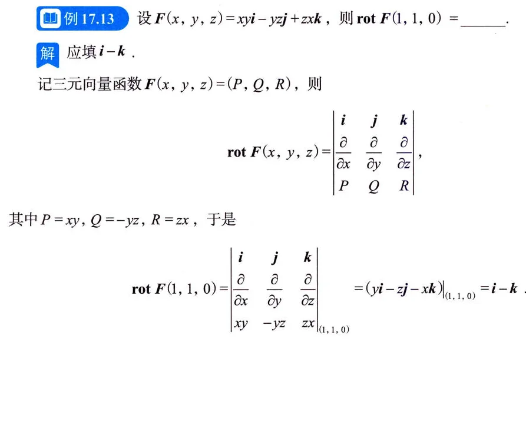
题 设 \( \boldsymbol{F}(x,y,z)=xy\boldsymbol{i}-yz\boldsymbol{j}+zx\boldsymbol{k} \)，则 \( \operatorname{rot}\boldsymbol{F}(1,1,0)= \)____。
思路 记 \( \boldsymbol{F}=(P,Q,R) \)，套旋度行列式，先算出函数形式再代点。
要点 \( P=xy,\ Q=-yz,\ R=zx \)，按展开式
\[ \operatorname{rot}\boldsymbol{F}=\left(\frac{\partial R}{\partial y}-\frac{\partial Q}{\partial z},\ \frac{\partial P}{\partial z}-\frac{\partial R}{\partial x},\ \frac{\partial Q}{\partial x}-\frac{\partial P}{\partial y}\right)=(y,\,-z,\,-x), \]
代入 \( (1,1,0) \) 得 \( \boldsymbol{i}-\boldsymbol{k} \)。应填 \( \boldsymbol{i}-\boldsymbol{k} \)。
注 先化简成坐标式再代点，比直接代点的数值行列式清爽得多；三个分量的"错位相减"顺序（\( R_y-Q_z,\ P_z-R_x,\ Q_x-P_y \)）建议按行列式现推，别背反。
易错点与技巧
- 平面束 \( A_1+\lambda A_2=0 \) 不含 \( \pi_2 \) 本身。若要找的平面恰好是 \( \pi_2 \)，这个设法会丢解，改写 \( A_2+\lambda A_1=0 \) 就含 \( \pi_2 \)（印P510）。
- 交面式直线的方向向量是 \( \boldsymbol{\tau}=\boldsymbol{n}_1\times\boldsymbol{n}_2 \)，不是点乘；算完检查 \( \boldsymbol{\tau}\cdot\boldsymbol{n}_1=\boldsymbol{\tau}\cdot\boldsymbol{n}_2=0 \) 能防手滑（印P511）。
- 投影口诀：往哪个面投影消哪个变量，且结果必须与 \( z=0 \)（或对应坐标面方程）联立；只写 \( \varphi(x,y)=0 \) 不算完。原书的严谨措辞是投影"包含于" \( \begin{cases}\varphi(x,y)=0\\z=0\end{cases} \)——考研计算直接当等号用，但概念辨析题要留心（印P515）。
- 柱面看缺字、旋转面看转轴：绕 \( z \) 轴转时 \( z \) 不动，另两个变量凑成 \( x^2+y^2 \)；书上 \( y^2=1+(z-1)^2 \) 绕 \( z \) 轴的例子值得亲手抄一遍（印P517–518）。
- 显式曲面 \( z=f(x,y) \) 的法向量 \( (f_x',f_y',-1) \) 朝下；题目要"与 \( z \) 轴正向夹锐角"（朝上）时取 \( (-f_x',-f_y',1) \)（印P520）。
- 方向导数公式里的方向余弦必须来自单位向量。题目给 \( \boldsymbol{l}=-3\boldsymbol{i}-4\boldsymbol{j} \) 这种，先除以模再代入；例17.11 就是设 \( 6a=-3k,\ 8b=-4k \)（\( k>0 \)）解的（印P522–524）。
- 线线、面面夹角用 arccos，线面夹角用 arcsin——线面角是 \( \dfrac{\pi}{2} \) 减去 \( \boldsymbol{\tau} \) 与 \( \boldsymbol{n} \) 的夹角；夹角公式的分子都要加绝对值（印P512–513）。
- 可微是方向导数计算公式的前提：例17.1 靠 \( \Delta z=\mathrm{d}z+o(\rho) \) 凑出极限为零，说明"可微 \( \Rightarrow \) 沿任一方向的方向导数都存在"；只有偏导存在推不出这条（印P509、522）。
- 混合积 \( [\boldsymbol{abc}]=0\Leftrightarrow \) 三向量共面；它轮换不变、对换变号，判共面、求体积（绝对值）各司其职，别和向量积的"平行 \( \Leftrightarrow \) 叉积为零"混着记（印P508–509）。
- 二次曲面识图用截痕法：单叶双曲面"两正一负"、双叶"一正两负"（正号对应中心轴）；\( z=k \) 截出椭圆多半是单叶双曲面、椭球面或椭圆抛物面，截出双曲线往双曲面想（印P516）。
- 方程组曲线求切向量别去硬解隐函数 \( y(x),z(x) \)——直接取两个曲面法向量（梯度）的叉积 \( \boldsymbol{\tau}=\boldsymbol{n}_1\times\boldsymbol{n}_2 \)，又快又稳（印P519）。
- 例17.6 型题里 \( x=\displaystyle\int_0^t\mathrm{e}^u\cos u\,\mathrm{d}u \)：用变限积分求导 \( x'(t)=\mathrm{e}^t\cos t \)，千万别先积分出来再求导（印P520）。
- 例17.12 的两个方向导数是二元线性方程组，解完务必回代验算一遍（把 \( f_x'=1,f_y'=3 \) 代回两个方向导数式子）；推广情形"两个方向导数全为零 \( \Rightarrow f \) 为常数"是概念题爱考的边角（印P524–525）。
- 求出旋转曲面后注意"取哪半边"：例17.5 的 \( \Sigma_1 \) 只要 \( z\ge0 \) 部分，写 \( z=\sqrt{x^2+y^2} \) 而不是 \( z^2=x^2+y^2 \)；投影后同样注意曲线的实际范围（印P518）。
考点与方法补充（站注）
以下均为站注，来源为全网调研与新东方《考研高数历年真题大数据》（近15年逐题统计），不是原书内容；数学事实一律以原书为准。
- 站注·真题大数据（考频定位）：本讲整体属第三梯队（15年出现5–8次，但一考就是大题10分+），标签是"工具性"。要拆开对待：方向导数与梯度是第二梯队（15年出现10次+，高频非必考），经常以小题直接考计算（沿某方向的方向导数、最大方向导数），这部分要练到条件反射；向量代数与空间解析几何本体是第三梯队，单独命题频率低，按"会操作"标准复习即可。
- 站注·真题大数据（三大高频操作）：平面束（求投影直线、过定直线的平面）、投影（消元法求投影曲线/区域）、旋转曲面（绕坐标轴）是本讲在真题里露脸最多的三个操作。命题趋势是跨章节综合题比重上升——这三种操作越来越常嵌在第18讲的大题里当前置步骤，而不是单独出题。
- 站注（与第18讲的铺垫关系）：本讲每个部件都能在第18讲对上号——格林公式补线要用直线方程与平面束；高斯公式要封闭曲面的法向量（就是本讲的切平面法向量 \( (F_x',F_y',F_z') \)）；曲面积分转二重积分要往坐标面投影（就是本讲"消哪个变量"的口诀）；三重积分、线面积分用对称性化简前得先认出曲面形状（就是本讲二次曲面识图）。第18讲按真题大数据口径"不复习直接丢10分+"，而丢的分里有相当一部分其实丢在本讲：曲面认不出、投影写不对，积分公式背得再熟也白搭。
- 站注·张宇方法论：张宇反复强调"尽快结束纯听课阶段，自己动手最重要"——本讲尤其如此：旋转曲面、平面束、投影这三样，看懂和会写完全是两码事，建议把书上例子（印P513、518）遮住答案重推一遍。书系设计上每讲开头都有思维导图（印P506–507 那两页就是），先建框架再做题；基础阶段《基础30讲》配《300题》，强化接《36讲》+《1000题》。
- 站注·试卷结构：数一高数占 56%（约 82/150 分）；本讲内容数二数三完全不考。数一同学复习时间紧张时，按梯队分配：方向导数梯度当常规得分点，解析几何部分以服务 L18 为底线。
- 站注（习题使用建议）：书末习题17.1–17.10（印P526–529）正好一题一型（线面关系、切线计数、切平面平行、向量模等式、投影直线、旋转曲面、方向导数、隐函数梯度最大值、散度、旋度），全部动手做完再对书后解答——本讲的"会"只能靠手写定义。
知识清单自测
自测题
自测 1（线面位置关系，习题17.1） 判断直线 \( L:\begin{cases}x+y-z+1=0\\x-y+3z+3=0\end{cases} \) 与平面 \( \pi:x-2y-z+3=0 \) 的位置关系（平行、在平面内、垂直、斜交）。
查看答案
解 \( \boldsymbol{n}_1=(1,1,-1) \)，\( \boldsymbol{n}_2=(1,-1,3) \)，交面式直线的方向向量
\[ \boldsymbol{\tau}=\boldsymbol{n}_1\times\boldsymbol{n}_2=\begin{vmatrix}\boldsymbol{i}&\boldsymbol{j}&\boldsymbol{k}\\1&1&-1\\1&-1&3\end{vmatrix}=(2,-4,-2)=2(1,-2,-1). \]
平面法向量 \( \boldsymbol{n}=(1,-2,-1) \)，\( \boldsymbol{\tau}\,//\,\boldsymbol{n} \)，故 \( L\perp\pi \)，选 (C)。
自测 2（投影直线，习题17.5） 求直线 \( L:\dfrac{x-1}{1}=\dfrac{y}{1}=\dfrac{z-1}{-1} \) 在平面 \( \pi:3x-y+3z=5 \) 上的投影直线 \( L_0 \) 的方程。
查看答案
解 先把 \( L \) 化成交面式 \( \begin{cases}x+z-2=0\\y+z-1=0\end{cases} \)。过 \( L \) 的平面束：\( (x+z-2)+\lambda(y+z-1)=0 \)，其法向量 \( (1,\lambda,1+\lambda) \)。与 \( \pi \) 垂直的条件：\( 3\cdot1+(-1)\lambda+3(1+\lambda)=0 \)，解得 \( \lambda=-3 \)，得 \( \pi_1:x-3y-2z+1=0 \)。故
\[ L_0:\begin{cases}3x-y+3z=5\\x-3y-2z+1=0.\end{cases} \]
自测 3（切线与平面平行，习题17.2） 在曲线 \( \Gamma:\begin{cases}x=t\\y=-t^2\\z=t^3\end{cases} \) 的所有切线中，与平面 \( x+2y+z=4 \) 平行的切线（ ）。(A) 只有 1 条 (B) 只有 2 条 (C) 至少有 3 条 (D) 不存在
查看答案
解 曲线在 \( t \) 处的切向量为 \( \boldsymbol{\tau}=(1,-2t,3t^2) \)，切线与平面 \( x+2y+z=4 \) 平行 \( \Leftrightarrow \boldsymbol{\tau} \) 与该平面的法向量 \( \boldsymbol{n}=(1,2,1) \) 垂直 \( \Leftrightarrow \boldsymbol{\tau}\cdot\boldsymbol{n}=1-4t+3t^2=0 \)，解得 \( t=1 \) 或 \( t=\dfrac13 \)。代入曲线方程得点 \( (1,-1,1) \) 和 \( \left(\dfrac13,-\dfrac19,\dfrac1{27}\right) \)，再代入平面方程左边分别得 \( 0 \) 与 \( \dfrac{4}{27} \)，均不等于 4，两点都不在平面上，符合"平行"题意。故与平面平行的切线只有 2 条，选 (B)。
自测 4（旋转曲面，习题17.6） 求过点 \( A(1,0,0) \) 与 \( B(0,1,1) \) 的直线绕 \( z \) 轴旋转一周所成曲面的方程。
查看答案
解 两点式 \( \dfrac{x-1}{1}=\dfrac{y}{-1}=\dfrac{z}{-1} \)，写成参数式 \( x=1+t,\ y=-t,\ z=-t \)，即 \( x=1-z,\ y=z \)。绕 \( z \) 轴旋转，套 \( x^2+y^2=x_1^2+y_1^2 \)：
\[ x^2+y^2=(1-z)^2+z^2,\quad 即\ x^2+y^2-2z^2+2z-1=0. \]
自测 5（方向导数，习题17.7） 求 \( u=\ln\left(x+\sqrt{y^2+z^2}\right) \) 在点 \( A(1,0,1) \) 处沿 \( \overrightarrow{AB} \)（\( B(3,-2,2) \)）方向的方向导数。
查看答案
解 \( u_x'\big|_A=\dfrac{1}{x+\sqrt{y^2+z^2}}\bigg|_{(1,0,1)}=\dfrac{1}{2} \)，\( u_y'\big|_A=0 \)，\( u_z'\big|_A=\dfrac{1}{2} \)。\( \overrightarrow{AB}=(2,-2,1) \)，单位向量 \( \left(\dfrac{2}{3},-\dfrac{2}{3},\dfrac{1}{3}\right) \)。方向导数
\[ \frac{\partial u}{\partial\overrightarrow{AB}}\bigg|_A=\frac{1}{2}\cdot\frac{2}{3}+0\cdot\left(-\frac{2}{3}\right)+\frac{1}{2}\cdot\frac{1}{3}=\frac{1}{2}. \]
自测 6（散度与旋度，习题17.9、17.10） (1) 设 \( \boldsymbol{F}=x^3\boldsymbol{i}+y^3\boldsymbol{j}+z^3\boldsymbol{k} \)，求 \( \operatorname{div}\boldsymbol{F}\big|_{(1,0,-1)} \)；(2) 设 \( \boldsymbol{A}=(z,\,3x,\,2y) \)，求 \( \operatorname{rot}\boldsymbol{A} \)。
查看答案
解 (1) \( \operatorname{div}\boldsymbol{F}=3x^2+3y^2+3z^2 \)，代入 \( (1,0,-1) \) 得 \( 3+0+3=6 \)。
(2) \( P=z,\ Q=3x,\ R=2y \)，按展开式
\[ \operatorname{rot}\boldsymbol{A}=\left(\frac{\partial R}{\partial y}-\frac{\partial Q}{\partial z}\right)\boldsymbol{i}+\left(\frac{\partial P}{\partial z}-\frac{\partial R}{\partial x}\right)\boldsymbol{j}+\left(\frac{\partial Q}{\partial x}-\frac{\partial P}{\partial y}\right)\boldsymbol{k}=2\boldsymbol{i}+\boldsymbol{j}+3\boldsymbol{k}. \]